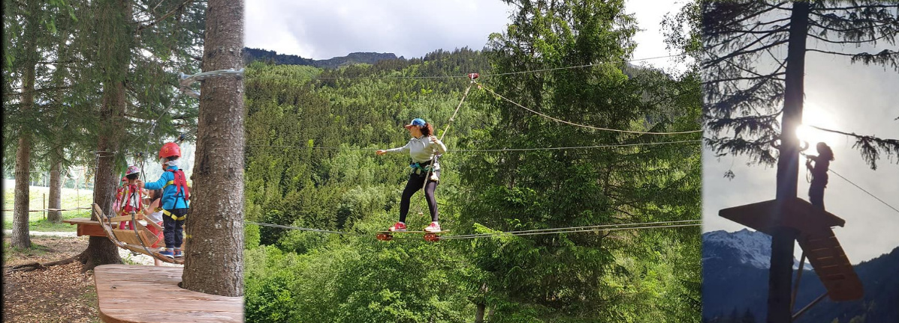
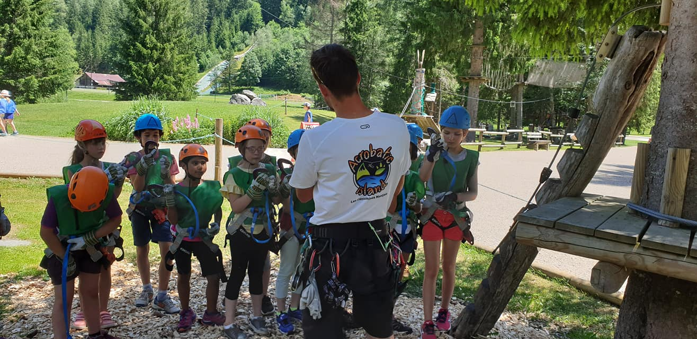
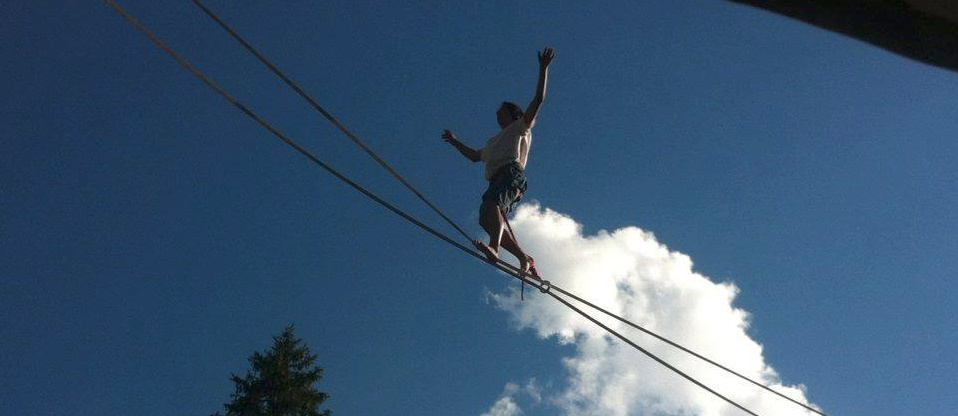
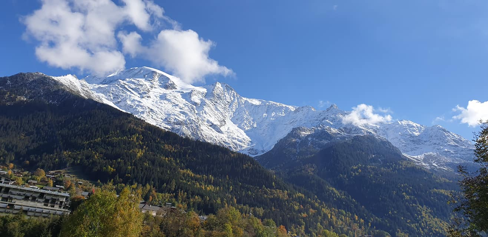

Les différents Parcours

Le petit aventurier
Spécialement pensé pour les petits casse-cous, ce parcours, accessible dès 2 ans et demi, situé entre 50cm et 80cm du sol permet aux plus petits de développer leur motricité et leut coordination tout en s'amusant.
- Tarif: 10€ pour un nombre de passages illimité (dans la limite du raisonnable)
- Conditions d'accès: 3ans, présence d'un adulte obligatoire pieds au sol pour surveiller
Parcours Kid
Pensé et adapté pour les enfants de 5 à 7 ans, ce parcours constitué de deux circuits entre 1,50m et 1,80 du sol permet aux jeunes aventuriers de prendre de la hauteur et d'évoluer de façon autonome dans les arbres.
- Tarif: 10€ pour un nombre de passages illimité (dans la limite du raisonnable)
- Conditions d'accès: 5ans ET 1m, présence d'un adulte obligatoire pieds au sol pour surveiller
Parcours Jaune
Adultes et enfants peuvent évoluer ensemble sur ce parcours découverte entre 4m et 5m du sol. Idéal pour apprivoiser la hauteur, l'équilibre et les premières sensations !
- Tarifs: 18€ pour un passage sur les parcours Jaune et Bleu (1h à 1h30 d'activité)
- Conditions d'accès: 7ans ET 1m20 ET accompagné d'un adulte, ou seul à partir de 10ans ET 1m20
Parcours Bleu
Après les premières sensations du parcours Jaune, adultes et enfants peuvent poursuivre leur aventure à 6-7m de hauteur sur ce parcours plein de tyroliennes, qui vous fera notamment traverser le lac du Pontet et visiter sa petite île.
- Tarifs: 18€ pour un passage sur les parcours Jaune et Bleu (1h à 1h30 d'activité)
- Condictions d'accès: 7ans ET 1m20 ET accompagné d'un adulte, ou seul à partir de 10ans ET 1m20
Parcours Rouge
Pour les plus sportifs et courageux avides de sensations, armez-vous d'équilibre et sortez les muscles pour venir à bout de ce parcours Rouge haut de 10m !
- Tarif: 23€ pour un passage sur les 3 parcours Jaune, Bleu, Rouge (1h30 à 2h d'activité)
- Conditions d'accès: 11ans ET 1m40 ET accompagné d'un adulte, ou seul à partir de 12ans ET 1m40
Sécurité

Débutant ou Expert, adulte ou enfant, vous serez accueilli et encadré par des moniteurs diplômés et évoluerez sur des parcours en ligne de vie continue. De l'équipement à l'explication des consignes avec démonstration sur un parcours test, jusqu'à la surveillance et l'assistance en cas de besoin, la joyeuse équipe d'Acrobatic Island mettra son professionnalisme à votre service pour vous offrir une superbe aventure !
Les équipements de protection individuelle que sont les baudriers, les longes ou encore les mousquetons font l'objet d'un suivi et d'un contrôle réguliers.
Construites en 2005, les installations du parcours aventure sont vérifiées et améliorées chaque année par un bureau de contrôle et un expert phytosanitaire. Soucieux de préserver et entretenir la belle nature qui nous entoure et dont nous profitons, nous cherchons à aménager les parcours de la façon la plus saine possible, notamment via l'installation de plateformes permettant à la sève élaborée de descendre librement le long du tronc et de nourrir l'ensemble du végétal.
Tarifs

| Parcours |
Conditions d'accès |
Tarif individuel |
| Parcours Petit Aventurier |
A partir de 2ans et demi |
10€ |
| Parcours Kid |
A partir de 5ans |
10€ |
| Parcours Découverte: Jaune + Bleu |
Accompagné d'un adulte à partir de 7ans ET 1m20. Seul à partir de 10ans ET 1m20 |
18€ |
| Parcours Sensation: Jaune + Bleu + Rouge |
Accompagné d'un adulte à partir de 11ans ET 1m40. Seul à partir de 12ans ET 1m40 |
23€ |
Moyens de paiement acceptés
ATTENTION: le règlement en carte bancaire n'est pas accepté.
Contact
